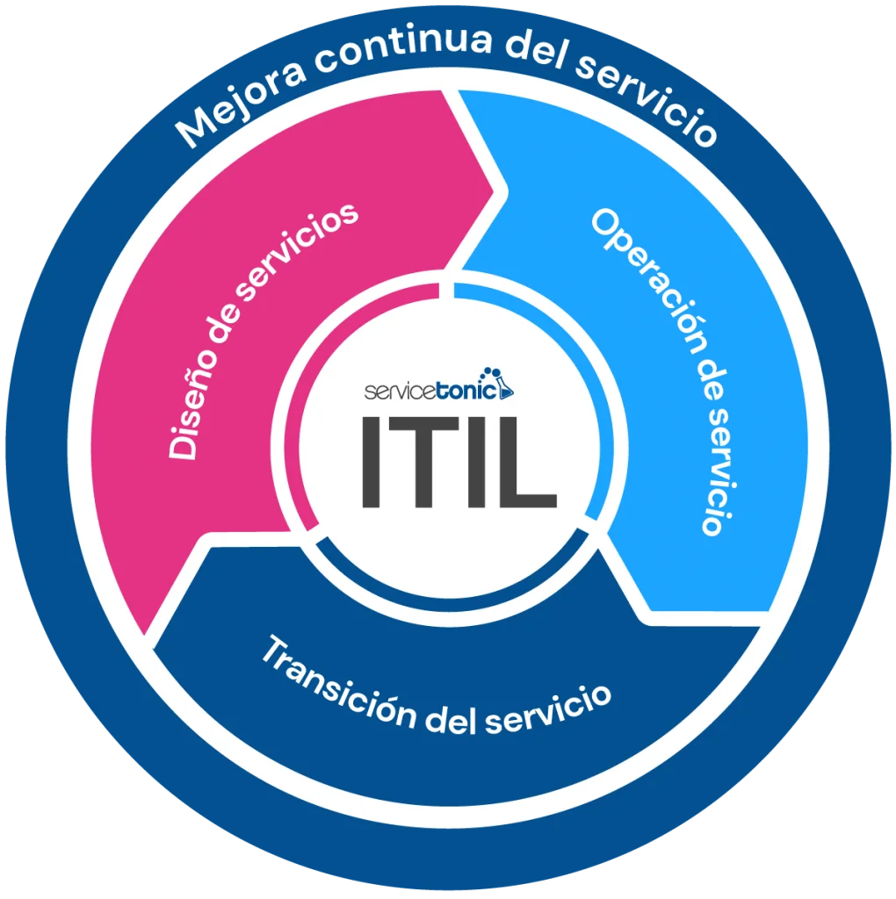

La Mejora Continua es una actividad recurrente que se lleva a cabo en todos los niveles de la organización para asegurar que el desempeño de los servicios cumple constantemente con las expectativas cambiantes de las partes interesadas.
No es solo una práctica, sino un elemento central del Sistema de Valor del Servicio (SVS) que impulsa la optimización de procesos, la eficiencia de los recursos y la maximización del valor entregado. Fomenta una cultura en la que todos los miembros del equipo están comprometidos con la identificación de oportunidades y la resolución proactiva de problemas.
ITIL 4 proporciona un modelo estructurado de 7 pasos para guiar a las organizaciones en sus iniciativas de mejora, asegurando que los cambios estén alineados con la visión del negocio.
Cada iniciativa debe estar conectada con la visión, misión y objetivos de la organización.
Se debe realizar una evaluación objetiva de la situación actual como punto de partida.
Definir un estado objetivo medible (KPIs) para saber exactamente qué se quiere lograr.
Crear un plan iterativo. No intentar hacer todo a la vez; avanzar paso a paso.
Ejecutar el plan. Aquí es donde se realiza el trabajo real, aplicando enfoques ágiles y gestión de proyectos.
Verificar los resultados. Comparar las métricas de la situación actual con los objetivos definidos en el paso 3.
Comunicar el éxito, consolidar el nuevo estado y buscar inmediatamente la siguiente oportunidad de mejora.